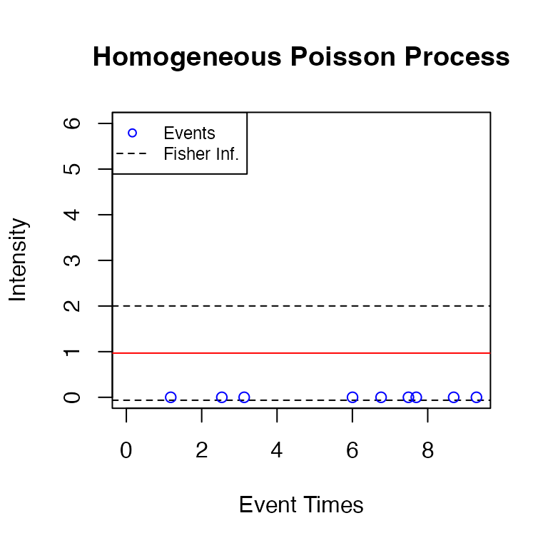

ppdiag, diagnostic tools for temporal Point Processes
Sally Sun, Owen G. Ward, Xiaoxi Zhao, Jing Wu, Tian Zheng.
ppdiag.Rmd
# remotes::install_github("OwenWard/ppdiag")
library(ppdiag)This vignette provides an introduction to the functions available in ppdiag to evaluate the fit of univariate temporal point processes.
To achieve this, we currently include a range of functions which allow a user to:
- Simulate data from a range of common univariate point processes.
- Fit a range of univariate point processes to data.
- After fitting a point process to some data, evaluate the ability of that point process to capture the temporal structure present in this data.
Classes
We create classes for each of the point process models included in the package. Currently, these are:
- Homogeneous Poisson Process
pp_hpp(lambda) creates a hpp object with rate parameter lambda.
hpp_obj <- pp_hpp(lambda = 1)
hpp_obj
#> $lambda
#> [1] 1
#>
#> $events
#> NULL
#>
#> attr(,"class")
#> [1] "hpp"- Hawkes Process:
pp_hp(lambda0, alpha, beta, events = NULL) creates a hp object.
hp_obj <- pp_hp(lambda0 = 0.5, alpha = 0.2, beta = 0.5)
hp_obj
#> $lambda0
#> [1] 0.5
#>
#> $alpha
#> [1] 0.2
#>
#> $beta
#> [1] 0.5
#>
#> $events
#> NULL
#>
#> attr(,"class")
#> [1] "hp"- Markov Modulated Poisson Process:
pp_mmpp(lambda0, lambda1, alpha, beta, Q, delta)creates anmmppobject.
Q <- matrix(c(-0.4, 0.4, 0.2, -0.2), ncol = 2, byrow = TRUE)
mmpp_obj <- pp_mmpp(Q, delta = c(1 / 3, 2 / 3),
lambda0 = 0.8,
c = 1.2)
mmpp_obj
#> $c
#> [1] 1.2
#>
#> $events
#> NULL
#>
#> $lambda0
#> [1] 0.8
#>
#> $Q
#> [,1] [,2]
#> [1,] -0.4 0.4
#> [2,] 0.2 -0.2
#>
#> $delta
#> [1] 0.3333333 0.6666667
#>
#> attr(,"class")
#> [1] "mmpp"- Markov-Modulated Hawkes Process:
pp_mmhp(lambda0, lambda1, alpha, beta, Q, delta) creates an mmhp object.
mmhp_obj <- pp_mmhp(Q, delta = c(1 / 3, 2 / 3),
lambda0 = 0.2,
lambda1 = .75,
alpha = 0.1,
beta = 0.2)
mmhp_obj
#> $Q
#> [,1] [,2]
#> [1,] -0.4 0.4
#> [2,] 0.2 -0.2
#>
#> $delta
#> [1] 0.3333333 0.6666667
#>
#> $events
#> NULL
#>
#> $lambda0
#> [1] 0.2
#>
#> $lambda1
#> [1] 0.75
#>
#> $alpha
#> [1] 0.1
#>
#> $beta
#> [1] 0.2
#>
#> attr(,"class")
#> [1] "mmhp"Simulating data
To simulate data from a given point process, we use the function pp_simulate(pp_obj, ...). Here the first argument specifies one of the above point processes, while the remaining arguments specify either the number of events simulated or the length of the observation period for possible events.
For example, we can simulate events up to a specified end time.
hpp_events <- pp_simulate(hpp_obj, end = 10)
#> Simulating up to endtime. To simulate n events specify n.
hpp_events
#> [1] 1.178415 2.534481 3.128104 6.003689 6.761803 7.487947 7.695707 8.689093
#> [9] 9.293207Alternatively, we can specify the number of events we wish to simulate.
hp_events <- pp_simulate(hp_obj, start = 0, n = 20)
#> 20 events simulated. To simulate up to endtime set n=NULL.
hp_events
#> [1] 0.9400185 1.1191265 2.1612737 2.5946876 3.5797847 3.9387649
#> [7] 4.2368953 4.4670930 5.8820189 7.0152093 7.0853348 7.1232218
#> [13] 7.2054465 8.9124657 9.0370266 9.1803104 9.6651189 9.7494958
#> [19] 10.4788863 11.5731880This returns the simulated events of the specified point process. For Markov Modulated processes, the states (and the times of these states) are also returned. In this scenario only a specified number of events can be simulated (currently).
mmhp_events <- pp_simulate(object = mmhp_obj, n = 20)
mmhp_events
#> $x
#> [1] 0.000000 7.664158 11.697800 12.424969 15.895487 16.605268 17.615062
#> [8] 20.980776 21.046057 24.448065 26.791573 27.144919 27.544524 43.189824
#> [15] 43.402157 43.453020 45.032403 64.820471
#>
#> $z
#> [1] 2 1 2 1 2 1 2 1 2 1 2 1 2 1 2 1 2 1
#>
#> $events
#> [1] 0.000000 5.708418 7.472399 8.274346 8.307444 8.730389 8.946091
#> [8] 10.836852 11.262435 11.276123 11.678003 15.085856 15.268783 20.683729
#> [15] 33.193656 43.256217 43.650652 43.898249 44.241350 44.742261 46.478088
#>
#> $zt
#> [1] 2 2 2 1 1 1 1 1 1 1 1 1 1 2 2 1 1 1 1 1 2
#>
#> $lambda.max
#> [1] 1.316867
#>
#> $start
#> [1] 0
#>
#> $end
#> [1] 64.82047Fitting a point process
For completeness, we include functions for fitting both homogeneous Poisson and Hawkes processes to data. Fitting a Markov modulated model is more complex, although we describe this procedure in an included vignette.
fithpp(hpp_events) returns an object of class hpp, estimating the MLE of a homogenous Poisson process for hpp_events
fit_hpp <- fithpp(hpp_events)
fit_hpp
#> $lambda
#> [1] 0.9684493
#>
#> $events
#> [1] 1.178415 2.534481 3.128104 6.003689 6.761803 7.487947 7.695707 8.689093
#> [9] 9.293207
#>
#> attr(,"class")
#> [1] "hpp"Similarly, fithp(hp_events) returns an object of class hp, estimating the three parameters of the Hawkes process from hp_events using constrOptim. This ensures that the returned solution (if one can be obtained), satisfies the stationary condition of a Hawkes process.
hp_events <- pp_simulate(hp_obj, n = 500)
#> 500 events simulated. To simulate up to endtime set n=NULL.
fit_hp <- fithp(hp_events)
fit_hp$lambda0
#> [1] 0.4666573
fit_hp$alpha
#> [1] 0.3043066
fit_hp$beta
#> [1] 0.5540956Diagnosing the fit of a point process to data
The main goal of this package is to provide users with tools to examine the fit of a specified point process to some data. There are several methods which can be used to assess the goodness of fit of a point process to temporal data. In this package we allow a user to:
- Visually inspect the estimated intensity of the point process.
- Examine the fitted intensity along with the distribution of rescaled inter-event times to help identify causes for lack of fit.
- Examine the distribution of the rescaled inter-event times, by utilising the time rescaling theorem.
- Examine the residual process of an estimated point process, in particular computing the raw and Pearson residuals for a given point process fit to data.
Visualize the intensity function
drawHPPIntensity(hpp, events) plots the intensity of a homogeneous Poisson process.
drawHPPIntensity(fit_hpp, events = hpp_events,
color = "red")
#> Using the hpp object. Set fit=TRUE to fit events provided.
Similarly, drawHPIntensity(hp, events) plots the intensity of a Hawkes process.
drawHPIntensity(fit_hp, events = hp_events)
#> Using the hp object. Set fit=TRUE to fit events provided.
To plot the fitted intensity on the input events, set fit=TRUE.
drawHPIntensity(events = hp_events, fit = TRUE)
#> Fitting provided events.
Similarly, drawUniMMHPIntensity(mmhp, mmhp_events) plots the intensity of a Markov modulated Hawkes process, with a similar function for Markov modulated Poisson processes. This requires both the point process object and the output from pp_simulate which describes the latent process.
drawUniMMHPIntensity(mmhp_obj, mmhp_events)
Visualize intensity and goodness of fit jointly
-
intensityqqplotdisplays the estimated intensity of a given point process along with a QQ-plot of the rescaled inter-event times. These together can often be useful in identifying issues with model fit for a chosen point process.
intensityqqplot(object = fit_hp, events = hp_events )
#> Using the hp object. Set fit=TRUE to fit events provided.
# this gives an error currently
intensityqqplot(object = mmhp_obj, markov_states = mmhp_events)Residual Analysis
-
pp_residualreturns both raw and Pearson residuals from fitting the specified point process to the given events.
pp_residual(object = mmhp_obj, events = mmhp_events$events)
#> $raw
#> [1] 4.478442
#>
#> $pearson
#> [1] 3.388703
pp_residual(object = fit_hp, events = hp_events)
#> $raw
#> [1] 0.01260463
#>
#> $pearson
#> [1] 0.01128254Overall summary of fit
- Finally,
pp_diagsummarises (both graphically and numerically) the fit of a specified point process to the data. For a given point process it computes the residuals (both raw and Pearson) obtained from fitting that point process to the data, performs a goodness of fit test based on the rescaled inter-event times, and displays graphical summaries of this diagnostic.
pp_diag(object = fit_hp, events = hp_events)
#> Raw residual: 0.01260463
#> Pearson residual: 0.01128254
#>
#> One-sample Kolmogorov-Smirnov test
#>
#> data: r
#> D = 0.029183, p-value = 0.788
#> alternative hypothesis: two-sided